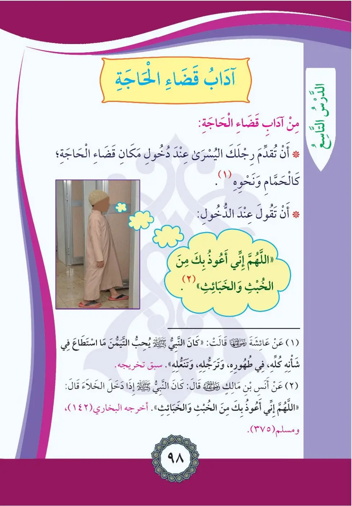
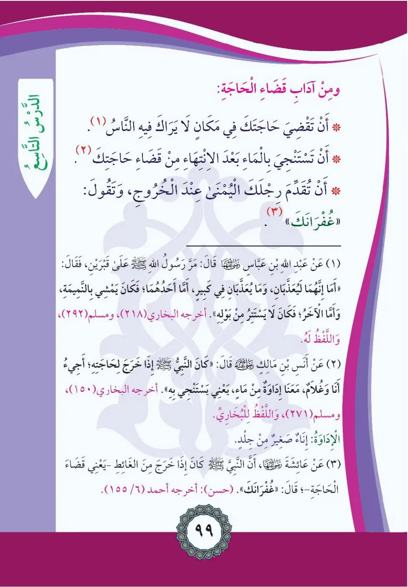

Stage 2·المرحلة الثانية⭐ Unit 1
آدَابُ قَضَاءِ الحَاجَةِ Etiquette of Relieving Oneself
From the Textbookpp. 99–100


من آداب قضاء الحاجة: أن تقدم رجلك اليمنى عند دخول مكان قضاء الحاجة. والدعاء عند دخول الخلاء؛ أن تقول: «اللهم إني أعوذ بك من الخبث والخبائث».
Min adabi qada'i al-haja: an tuqaddima rijlaka al-yumna 'and dukhul makan qada'i al-haja.
From the etiquette of relieving oneself:
Enter the place with the right foot first.
Say when entering the toilet: "O Allah, I seek refuge with You from male and female devils."
கழிவறையில் வலக்கால் முதலில் நுழைய வேண்டும்; «அல்லாஹ்வே! ஆண், பெண் ஷைத்தான்களின் தீமையிலிருந்து உம்மிடம் அடைக்கலம் தேடுகிறேன்» என துஆ செய்ய வேண்டும்.
ومن آداب قضاء الحاجة: أن تقضي حاجتك في مكان لا يراك فيه الناس. والاستنجاء بالماء بعد الانتهاء. وأن تقدم رجلك اليمنى عند الخروج وتقول: «غفرانك».
An taqdiya hajataka fi makani la yaraka fih an-nas, wa-listinja'u bi-l-ma'i ba'da al-intiha'.
More etiquette:
Relieve yourself where people cannot see you.
Clean yourself with water afterwards.
Exit with the right foot first saying: "I ask Your forgiveness."
மறைவான இடத்தில் கழிவாங்குதல், தண்ணீரால் ஸ்துத்தாஹரத் செய்தல், வெளியேறும்போது "குஃஃரானக்" (மன்னிப்பு கோருகிறேன்) என கூறுதல்.
وعن عائشة رضي الله عنها قالت: كان النبي صلى الله عليه وسلم يحب التيمن في شأنه كله: في طهوره، وترجله، وتنعله.
Kana an-nabiyyu yuhibbu at-taymunna fi sha'nihi kullih.
Aisha reported: The Prophet used to love beginning with the right side in all his affairs - his purification, putting on his sandals, and combing his hair.
நபி (ஸல்) தம் எல்லா காரியங்களிலும் வலப்பக்கத்திலிருந்து தொடங்குவதை விரும்பினார்கள்.
وعن أنس بن مالك رضي الله عنه قال: كان النبي صلى الله عليه وسلم إذا دخل الخلاء قال: «اللهم إني أعوذ بك من الخبث والخبائث». أخرجه البخاري (١٤٢)، ومسلم (٣٧٥)
Kana an-nabiyyu idha dakhala al-khala'a qala: Allahumma inni a'idhu bika min al-khubthi wa-l-khaba'ith.
Anas ibn Malik reported: When the Prophet entered the privy he would say: "O Allah, I seek refuge with You from male and female devils." (Bukhari 142, Muslim 375)
நபி (ஸல்) கழிவறையில் நுழைந்தபோது "அல்லாஹ்வே! ஆண், பெண் ஷைத்தான்களிடமிருந்து உம்மிடம் அடைக்கலம் தேடுகிறேன்" என கூறினார்கள் (புகாரி 142, முஸ்லிம் 375)
وعن عبد الله بن عباس رضي الله عنهما قال: مرّ رسول الله صلى الله عليه وسلم على قبرين فقال: «إنهما لعُذَّبان، وما يُعذبان في كبير؛ أما أحدهما فكان يمشي بالنميمة، وأما الآخر فكان لا يستتر من بوله». أخرجه البخاري (٢١٨)، ومسلم (٢٩٢)، واللفظ له
Marra rasulu Allahi 'ala qabrayn fa-qala: Innahuma la-'uddaban.
Ibn Abbas reported: The Messenger of Allah passed by two graves and said: "These two are being punished, and they are not punished for something major; as for one, he used to walk around spreading gossip, and as for the other, he did not protect himself from urine." (Bukhari 218, Muslim 292)
இரு கல்லறைகளின் மீது நபி (ஸல்): "இவர்கள் இருவரும் சிறிய காரணத்துக்காக வேதனைப்படுகிறார்கள்" (புகாரி 218, முஸ்லிம் 292)
وعن أنس بن مالك رضي الله عنه قال: كان النبي صلى الله عليه وسلم إذا خرج لحاجته أنا وغلام معنا، إذاءة من ماء يعني: يستنجي به. أخرجه البخاري ومسلم
Kana an-nabiyyu salla Allahu 'alayhi wa sallam idha kharaja li-hajatihi ana wa-ghulamun ma'ahu.
Anas ibn Malik reported: When the Prophet went out to relieve himself, I and a young boy were with him carrying a small waterskin of water with which he would clean himself. (Bukhari & Muslim)
நபி (ஸல்) கழிவாங்கச் செல்லும்போது என்னுடன் ஒரு சிறுவனும் தண்ணீர் தோல் பையுடன் செல்வோம் (புகாரி 271, முஸ்லிம் 271)
وعن عائشة رضي الله عنها قالت: كان النبي صلى الله عليه وسلم إذا خرج من الغائط يعني: قضاء الحاجة قال: «غفرانك». (حسن) أخرجه أحمد (٦/١٥٥)
Kana an-nabiyyu idha kharaja min al-gha'it qala: Ghifranak.
Aisha reported: Whenever the Prophet came out from relieving himself, meaning after answering the call of nature, he said: "Your forgiveness." (Hasan; Ahmad 6/155)
நபி (ஸல்) கழிவாங்கி வெளியேறும்போது "குஃஃரானக்" என கூறுவார்கள் (அஹ்மத் 6/155)